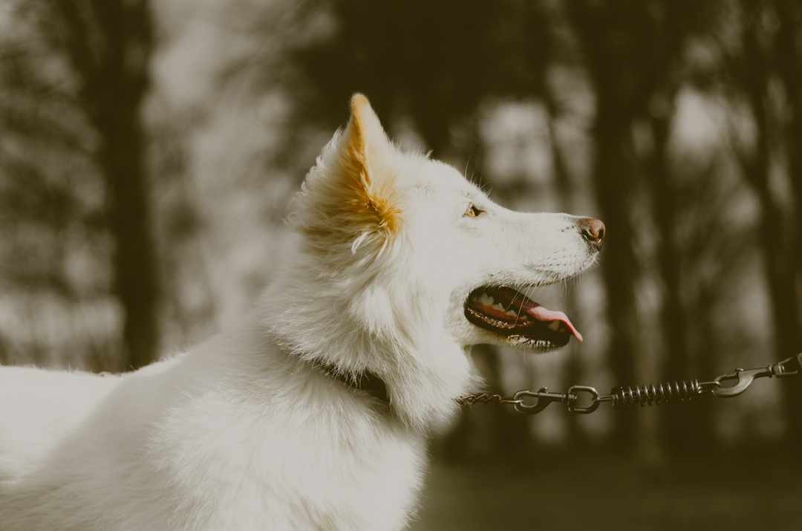

Oliva
Ella fue encontrada con desnutrición y con miedo a los humanos, despues de un proceso largo de recuparación, ya cuenta con una nueva familia, que le da amor, y cuidan de ella.

Hola, somos una fundación que ayuda a animales que han sido abandonados, dandoles un hogar de paso temporal, mientras encontramos a un humanos que quiera cuidar de el. ¿Te gustaria ayudarnos?
Ella fue encontrada con desnutrición y con miedo a los humanos, despues de un proceso largo de recuparación, ya cuenta con una nueva familia, que le da amor, y cuidan de ella.
Ella es una muestra de fuerza y cariño, despues de haber sido rescatada de su antiguo dueño quien la maltrataba, a podido recuperarse y tener un segunda oportunidad.
Siendo el mas juguetos de nuestros amigos, el es una muestra de lealtad, quien después de pasar por muchas circunstacias a logrado encontrar a un humano compañero de vida.
Poder adoptar es lo mejor para ayudar a un ser que te lo agradecera siempre.